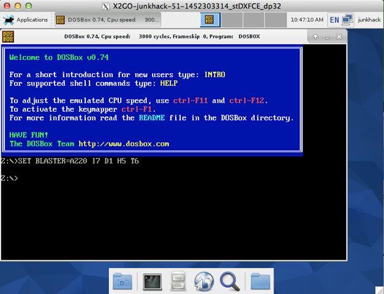

PulseView の 0.3.0-git-f3697d3 をビルドしてみました。
結論から言えば、今のところ起動してすぐ落ちます。（涙）

無理やり、メニューから開いてみるとポートのオープンでこけているような感じです。about は見れました。

デバイスにもコネクトし、スキャンすれば出てきます。

しかし、OK を押すと最初のダイアログ表示が出て、OK を押すと、SIGABRT で落ちます。
Process: pulseview-bin [95174] Path: /Applications/PulseView.app/Contents/MacOS/./pulseview-bin Identifier: com.yourcompany.pulseview Version: 0.3.0-git-5d73886 (???) Code Type: X86-64 (Native) Parent Process: sh [95171] Responsible: sh [95171] User ID: 501 Date/Time: 2015-12-30 03:51:25.054 +0900 OS Version: Mac OS X 10.9.5 (13F34) Report Version: 11 Anonymous UUID: C9AF270A-FCB7-7966-372A-2DF968A13DBE Crashed Thread: 0 Dispatch queue: com.apple.main-thread Exception Type: EXC_CRASH (SIGABRT) Exception Codes: 0x0000000000000000, 0x0000000000000000 Application Specific Information: abort() called Thread 0 Crashed:: Dispatch queue: com.apple.main-thread 0 libsystem_kernel.dylib 0x00007fff8f96d866 __pthread_kill + 10 1 libsystem_pthread.dylib 0x00007fff8bb5535c pthread_kill + 92 2 libsystem_c.dylib 0x00007fff85eefb1a abort + 125 3 libglib-2.0.0.dylib 0x00000001022cae07 g_assertion_message + 387 4 libglib-2.0.0.dylib 0x00000001022cae65 g_assertion_message_expr + 94 5 libglib-2.0.0.dylib 0x00000001022e43a8 g_variant_type_info_check + 379 6 libglib-2.0.0.dylib 0x00000001022e41fe g_variant_type_info_get_type_string + 16 7 libglib-2.0.0.dylib 0x00000001022d7b7c g_variant_get_type + 22 8 pulseview-bin 0x000000010112d4af pv::prop::Int::get_widget(QWidget*, bool) + 159 (int.cpp:72) 9 pulseview-bin 0x000000010111733f pv::binding::Binding::add_properties_to_form(QFormLayout*, bool) const + 95 (binding.cpp:55) 10 pulseview-bin 0x000000010111742d pv::binding::Binding::get_property_form(QWidget*, bool) const + 109 (binding.cpp:71) 11 pulseview-bin 0x0000000101129599 pv::popups::DeviceOptions::DeviceOptions(std::__1::shared_ptr<sigrok::Device>, QWidget*) + 185 (qglobal.h:2436) 12 pulseview-bin 0x000000010112f96b pv::toolbars::MainBar::update_device_config_widgets() + 171 (memory:4447) 13 pulseview-bin 0x000000010112f82b pv::toolbars::MainBar::update_device_list() + 475 (list:565) 14 pulseview-bin 0x00000001010eac9a pv::MainWindow::select_init_device() + 1594 (mainwindow.cpp:589) 15 pulseview-bin 0x00000001010e759e pv::MainWindow::MainWindow(pv::DeviceManager&, std::__1::basic_string<char, std::__1::char_traits<char>, std::__1::allocator<char> >, std::__1::basic_string<char, std::__1::char_traits<char>, std::__1::allocator<char> >, QWidget*) + 606 (mainwindow.cpp:128) 16 pulseview-bin 0x00000001010e2880 main + 848 (main.cpp:163) 17 libdyld.dylib 0x00007fff89c435fd start + 1
うーん、なんでしょうかね。
とりあえず、いつかまた再チャレンジするときに備えて、ビルド手順を載せておきます。
▼環境
osx 10.9.5
qt-opensource-mac-4.8.7
$ xcode-select -v
xcode-select version 2333.$ xcode-select -p
/Applications/Xcode.app/Contents/Developer$ xcode-select -print-path
/Applications/Xcode.app/Contents/Developer$ xcodebuild -version
Xcode 6.2Build version 6C131e
$ cmake –version
cmake version 3.4.1$ clang -v
Apple LLVM version 6.0 (clang-600.0.57) (based on LLVM 3.5svn)Target: x86_64-apple-darwin13.4.0
Thread model: posix
こんな感じの環境です。ビルド手順は、基本以下のとおりです。cmake するオプションは少し買えました。
前準備として、Qtの4系最終の4.8.7 を入れておきます。
あと、ports で以下を入れておきます。
$ sudo port selfupdate
$ sudo port install boost libusb libzip libftdi0$ sudo port install autoconf automake cmake glib2 python33 libtool pkgconfig
環境変数を反映しておきます。
$ export PKG_CONFIG_PATH=/usr/local/lib/pkgconfig/
libserialport
$ git clone git://sigrok.org/libserialport
$ cd libserialport$ ./autogen.sh
$ ./configure
$ make
$ sudo make install
以下に入りました。
HOPE:libserialport junkhack$ sudo make install
CC serialport.lo
CC macosx.lo
CCLD libserialport.la
/usr/local/bin/gmkdir -p '/usr/local/lib'
/bin/sh ./libtool --silent --mode=install /usr/local/bin/ginstall -c libserialport.la '/usr/local/lib'
/usr/local/bin/gmkdir -p '/usr/local/include'
/usr/local/bin/ginstall -c -m 644 libserialport.h '/usr/local/include'
/usr/local/bin/gmkdir -p '/usr/local/lib/pkgconfig'
/usr/local/bin/ginstall -c -m 644 libserialport.pc '/usr/local/lib/pkgconfig'
次、libsigrok です。
libsigrok
$ git clone git://sigrok.org/libsigrok
$ cd libsigrok$ ./autogen.sh
$ ./configure
$ make
$ sudo make install
以下に入りました。
HOPE:libsigrok junkhack$ sudo make install
/usr/local/bin/gmkdir -p '/usr/local/lib'
/bin/sh ./libtool --silent --mode=install /usr/local/bin/ginstall -c libsigrok.la bindings/cxx/libsigrokcxx.la '/usr/local/lib'
/Applications/Xcode.app/Contents/Developer/Toolchains/XcodeDefault.xctoolchain/usr/bin/ranlib: file: /usr/local/lib/libsigrok.a(fallback.o) has no symbols
/usr/local/bin/gmkdir -p '/usr/local/include/libsigrokcxx'
/usr/local/bin/ginstall -c -m 644 bindings/cxx/include/libsigrokcxx/libsigrokcxx.hpp '/usr/local/include/libsigrokcxx'
/usr/local/bin/gmkdir -p '/usr/local/include/libsigrok'
/usr/local/bin/ginstall -c -m 644 include/libsigrok/libsigrok.h include/libsigrok/proto.h '/usr/local/include/libsigrok'
/usr/local/bin/gmkdir -p '/usr/local/include/libsigrokcxx'
/usr/local/bin/ginstall -c -m 644 bindings/cxx/include/libsigrokcxx/enums.hpp '/usr/local/include/libsigrokcxx'
/usr/local/bin/gmkdir -p '/usr/local/include/libsigrok'
/usr/local/bin/ginstall -c -m 644 include/libsigrok/version.h '/usr/local/include/libsigrok'
/usr/local/bin/gmkdir -p '/usr/local/lib/pkgconfig'
/usr/local/bin/ginstall -c -m 644 libsigrok.pc bindings/cxx/libsigrokcxx.pc '/usr/local/lib/pkgconfig'
HOPE:libsigrok junkhack$
次、コマンドライン版のです。
sigrok-cli
$ git clone git://sigrok.org/sigrok-cli
$ cd sigrok-cli$ ./autogen.sh
$ ./configure
$ make
$ sudo make install
以下に入りました。
HOPE:sigrok-cli junkhack$ sudo make install
/usr/local/bin/gmkdir -p '/usr/local/bin'
/usr/local/bin/ginstall -c sigrok-cli '/usr/local/bin'
/usr/local/bin/gmkdir -p '/usr/local/share/man/man1'
/usr/local/bin/ginstall -c -m 644 doc/sigrok-cli.1 '/usr/local/share/man/man1'
HOPE:sigrok-cli junkhack$
次が、問題のやつです。
PulseView
$ git clone git://sigrok.org/pulseview
$ cd pulseview$ cmake -DENABLE_TESTS=n -DDISABLE_WERROR=y .
$ make
$ sudo make install
cmake でテストをn にするか、警告を無視するかをチェックし、進みます。何か、未定義の変数や宣言などがあるようです。直すのが面倒だったので、とりあえず。
以下に入りました。
HOPE:pulseview junkhack$ sudo make install
Password:
[ 54%] Built target pulseview
[100%] Built target pulseview-test
Install the project...
-- Install configuration: "RelWithDebInfo"
-- Installing: /usr/local/bin/pulseview
-- Installing: /usr/local/share/man/man1/pulseview.1
HOPE:pulseview junkhack$
で、いきなり実行するも、以下のように。
$ ll /usr/local/bin/pulseview
-rwxr-xr-x 1 root admin 1913672 12 30 00:57 /usr/local/bin/pulseview$ /usr/local/bin/pulseview
Failed to import the site moduleYour PYTHONPATH points to a site-packages dir for Python 2.x but you are running Python 3.x!
PYTHONPATH is currently: "/usr/local/lib/python2.7/site-packages"
You should `unset PYTHONPATH` to fix this.
otool でライブラリのパスを見ると、以下のようです。
$ otool -L /usr/local/bin/pulseview
/usr/local/bin/pulseview:
/opt/local/lib/libboost_filesystem-mt.dylib (compatibility version 0.0.0, current version 0.0.0)
/opt/local/lib/libboost_system-mt.dylib (compatibility version 0.0.0, current version 0.0.0)
/opt/local/lib/libboost_thread-mt.dylib (compatibility version 0.0.0, current version 0.0.0)
QtSvg.framework/Versions/4/QtSvg (compatibility version 4.8.0, current version 4.8.7)
QtGui.framework/Versions/4/QtGui (compatibility version 4.8.0, current version 4.8.7)
QtCore.framework/Versions/4/QtCore (compatibility version 4.8.0, current version 4.8.7)
/usr/local/lib/libsigrokcxx.2.dylib (compatibility version 3.0.0, current version 3.0.0)
/usr/local/lib/libsigrok.2.dylib (compatibility version 3.0.0, current version 3.0.0)
/usr/local/lib/libglibmm-2.4.1.dylib (compatibility version 5.0.0, current version 5.0.0)
/opt/local/lib/libgobject-2.0.0.dylib (compatibility version 4601.0.0, current version 4601.2.0)
/usr/local/lib/libsigc-2.0.0.dylib (compatibility version 1.0.0, current version 1.0.0)
/usr/local/lib/libsigrokdecode.2.dylib (compatibility version 3.0.0, current version 3.0.0)
/opt/local/lib/libglib-2.0.0.dylib (compatibility version 4601.0.0, current version 4601.2.0)
/opt/local/lib/libintl.8.dylib (compatibility version 10.0.0, current version 10.4.0)
/usr/lib/libc++.1.dylib (compatibility version 1.0.0, current version 120.0.0)
/usr/lib/libSystem.B.dylib (compatibility version 1.0.0, current version 1197.1.1)
うーん、Python3.x でということですが、ありません。あと、以下の３つはどこ探してもありませんでしたが、、、
QtSvg.framework
QtGui.frameworkQtCore.framework
ちなみに、Qt5.5 でビルドしたときは、以下のようでした。
----- qt5.5
HOPE:MacOS junkhack$ otool -L pulseview
pulseview:
/opt/local/lib/libboost_filesystem-mt.dylib (compatibility version 0.0.0, current version 0.0.0)
/opt/local/lib/libboost_system-mt.dylib (compatibility version 0.0.0, current version 0.0.0)
/opt/local/lib/libboost_thread-mt.dylib (compatibility version 0.0.0, current version 0.0.0)
/opt/local/lib/libboost_unit_test_framework-mt.dylib (compatibility version 0.0.0, current version 0.0.0)
@rpath/QtSvg.framework/Versions/5/QtSvg (compatibility version 5.5.0, current version 5.5.1)
/usr/local/lib/libsigrokcxx.2.dylib (compatibility version 3.0.0, current version 3.0.0)
/usr/local/lib/libsigrok.2.dylib (compatibility version 3.0.0, current version 3.0.0)
/usr/local/lib/libglibmm-2.4.1.dylib (compatibility version 5.0.0, current version 5.0.0)
/opt/local/lib/libgobject-2.0.0.dylib (compatibility version 4601.0.0, current version 4601.2.0)
/usr/local/lib/libsigc-2.0.0.dylib (compatibility version 1.0.0, current version 1.0.0)
/usr/local/lib/libsigrokdecode.2.dylib (compatibility version 3.0.0, current version 3.0.0)
/opt/local/lib/libglib-2.0.0.dylib (compatibility version 4601.0.0, current version 4601.2.0)
/opt/local/lib/libintl.8.dylib (compatibility version 10.0.0, current version 10.4.0)
@rpath/QtWidgets.framework/Versions/5/QtWidgets (compatibility version 5.5.0, current version 5.5.1)
@rpath/QtGui.framework/Versions/5/QtGui (compatibility version 5.5.0, current version 5.5.1)
@rpath/QtCore.framework/Versions/5/QtCore (compatibility version 5.5.0, current version 5.5.1)
/usr/lib/libc++.1.dylib (compatibility version 1.0.0, current version 120.0.0)
/usr/lib/libSystem.B.dylib (compatibility version 1.0.0, current version 1197.1.1)
HOPE:MacOS junkhack$
これは探せばありました。なんで、Qt4 だとないんでしょうか？何か入れ忘れたのですかね。ちなみに、0.2.0 のELIAS さんのビルドしたものは、以下のようです。
$ otool -L pulseview-bin
pulseview-bin:
@executable_path/../Frameworks/libboost_filesystem-mt.dylib (compatibility version 0.0.0, current version 0.0.0)
@executable_path/../Frameworks/libboost_system-mt.dylib (compatibility version 0.0.0, current version 0.0.0)
@executable_path/../Frameworks/QtSvg.framework/Versions/4/QtSvg (compatibility version 4.8.0, current version 4.8.6)
@executable_path/../Frameworks/QtGui.framework/Versions/4/QtGui (compatibility version 4.8.0, current version 4.8.6)
@executable_path/../Frameworks/QtCore.framework/Versions/4/QtCore (compatibility version 4.8.0, current version 4.8.6)
@executable_path/../Frameworks/libsigrokxx.2.dylib (compatibility version 3.0.0, current version 3.0.0)
@executable_path/../Frameworks/libsigrok.2.dylib (compatibility version 3.0.0, current version 3.0.0)
@executable_path/../Frameworks/libglibmm-2.4.1.dylib (compatibility version 5.0.0, current version 5.0.0)
@executable_path/../Frameworks/libgobject-2.0.0.dylib (compatibility version 4201.0.0, current version 4201.0.0)
@executable_path/../Frameworks/libglib-2.0.0.dylib (compatibility version 4201.0.0, current version 4201.0.0)
@executable_path/../Frameworks/libintl.8.dylib (compatibility version 10.0.0, current version 10.2.0)
@executable_path/../Frameworks/libsigc-2.0.0.dylib (compatibility version 1.0.0, current version 1.0.0)
@executable_path/../Frameworks/libsigrokdecode.2.dylib (compatibility version 3.0.0, current version 3.0.0)
@executable_path/../Frameworks/Python.framework/Versions/3.4/Python (compatibility version 3.4.0, current version 3.4.0)
/usr/lib/libc++.1.dylib (compatibility version 1.0.0, current version 120.0.0)
/usr/lib/libSystem.B.dylib (compatibility version 1.0.0, current version 1197.1.1)
Frameworks は、これを拝借します。
アプリケーション直下にコピーして上書きしてきます。
$ cd /Applications/PulseView.app/Contents $ pwd /Applications/PulseView.app/Contents cp -p /opt/local/lib/libboost_filesystem-mt.dylib ./Frameworks cp -p /opt/local/lib/libboost_system-mt.dylib ./Frameworks cp -p /opt/local/lib/libboost_thread-mt.dylib ./Frameworks cp -p /usr/local/lib/libsigrokcxx.2.dylib ./Frameworks cp -p /usr/local/lib/libsigrok.2.dylib ./Frameworks cp -p /usr/local/lib/libglibmm-2.4.1.dylib ./Frameworks cp -p /opt/local/lib/libgobject-2.0.0.dylib ./Frameworks cp -p /usr/local/lib/libsigc-2.0.0.dylib ./Frameworks cp -p /usr/local/lib/libsigrokdecode.2.dylib ./Frameworks cp -p /opt/local/lib/libglib-2.0.0.dylib ./Frameworks cp -p /opt/local/lib/libintl.8.dylib ./Frameworks
Qt で作ったのをosx でライブラリにリンクするツールとか、そういうのはないのでしょうかね。
バイナリのライブラリは以下のコマンドで、書き換えられます。
install_name_tool -change 変更したいディレクトリ そこに新しく書き込みたいディレクトリ オブジェクトファイルの名前
パスを切り出して、テキストファイルで編集し、
HOPE:MacOS junkhack$ otool -L ./pulseview | cut -f 1 -d ' ' | cut -f 2 ./pulseview: /opt/local/lib/libboost_filesystem-mt.dylib /opt/local/lib/libboost_system-mt.dylib /opt/local/lib/libboost_thread-mt.dylib QtSvg.framework/Versions/4/QtSvg QtGui.framework/Versions/4/QtGui QtCore.framework/Versions/4/QtCore /usr/local/lib/libsigrokcxx.2.dylib /usr/local/lib/libsigrok.2.dylib /usr/local/lib/libglibmm-2.4.1.dylib /opt/local/lib/libgobject-2.0.0.dylib /usr/local/lib/libsigc-2.0.0.dylib /usr/local/lib/libsigrokdecode.2.dylib /opt/local/lib/libglib-2.0.0.dylib /opt/local/lib/libintl.8.dylib /usr/lib/libc++.1.dylib /usr/lib/libSystem.B.dylib HOPE:MacOS junkhack$
以下のようなコマンドを作りました。
cd MacOS/ cp pulseview pulseview_bup487 install_name_tool -change /opt/local/lib/libboost_filesystem-mt.dylib @executable_path/../Frameworks/libboost_filesystem-mt.dylib ./pulseview install_name_tool -change /opt/local/lib/libboost_system-mt.dylib @executable_path/../Frameworks/libboost_system-mt.dylib ./pulseview install_name_tool -change /opt/local/lib/libboost_thread-mt.dylib @executable_path/../Frameworks/libboost_thread-mt.dylib ./pulseview install_name_tool -change QtSvg.framework/Versions/4/QtSvg @executable_path/../Frameworks/QtSvg.framework/Versions/4/QtSvg ./pulseview install_name_tool -change QtGui.framework/Versions/4/QtGui @executable_path/../Frameworks/QtGui.framework/Versions/4/QtGui ./pulseview install_name_tool -change QtCore.framework/Versions/4/QtCore @executable_path/../Frameworks/QtCore.framework/Versions/4/QtCore ./pulseview install_name_tool -change /usr/local/lib/libsigrokcxx.2.dylib @executable_path/../Frameworks/libsigrokcxx.2.dylib ./pulseview install_name_tool -change /usr/local/lib/libsigrok.2.dylib @executable_path/../Frameworks/libsigrok.2.dylib ./pulseview install_name_tool -change /usr/local/lib/libglibmm-2.4.1.dylib @executable_path/../Frameworks/libglibmm-2.4.1.dylib ./pulseview install_name_tool -change /opt/local/lib/libgobject-2.0.0.dylib @executable_path/../Frameworks/libgobject-2.0.0.dylib ./pulseview install_name_tool -change /usr/local/lib/libsigc-2.0.0.dylib @executable_path/../Frameworks/libsigc-2.0.0.dylib ./pulseview install_name_tool -change /usr/local/lib/libsigrokdecode.2.dylib @executable_path/../Frameworks/libsigrokdecode.2.dylib ./pulseview install_name_tool -change /opt/local/lib/libglib-2.0.0.dylib @executable_path/../Frameworks/libglib-2.0.0.dylib ./pulseview install_name_tool -change /opt/local/lib/libintl.8.dylib @executable_path/../Frameworks/libintl.8.dylib ./pulseview
パスを書き換えました。以下のようになっているはずです。
$ otool -L pulseview-bin
pulseview-bin:
@executable_path/../Frameworks/libboost_filesystem-mt.dylib (compatibility version 0.0.0, current version 0.0.0)
@executable_path/../Frameworks/libboost_system-mt.dylib (compatibility version 0.0.0, current version 0.0.0)
@executable_path/../Frameworks/libboost_thread-mt.dylib (compatibility version 0.0.0, current version 0.0.0)
@executable_path/../Frameworks/QtSvg.framework/Versions/4/QtSvg (compatibility version 4.8.0, current version 4.8.7)
@executable_path/../Frameworks/QtGui.framework/Versions/4/QtGui (compatibility version 4.8.0, current version 4.8.7)
@executable_path/../Frameworks/QtCore.framework/Versions/4/QtCore (compatibility version 4.8.0, current version 4.8.7)
@executable_path/../Frameworks/libsigrokcxx.2.dylib (compatibility version 3.0.0, current version 3.0.0)
@executable_path/../Frameworks/libsigrok.2.dylib (compatibility version 3.0.0, current version 3.0.0)
@executable_path/../Frameworks/libglibmm-2.4.1.dylib (compatibility version 5.0.0, current version 5.0.0)
@executable_path/../Frameworks/libgobject-2.0.0.dylib (compatibility version 4601.0.0, current version 4601.2.0)
@executable_path/../Frameworks/libsigc-2.0.0.dylib (compatibility version 1.0.0, current version 1.0.0)
@executable_path/../Frameworks/libsigrokdecode.2.dylib (compatibility version 3.0.0, current version 3.0.0)
@executable_path/../Frameworks/libglib-2.0.0.dylib (compatibility version 4601.0.0, current version 4601.2.0)
@executable_path/../Frameworks/libintl.8.dylib (compatibility version 10.0.0, current version 10.4.0)
/usr/lib/libc++.1.dylib (compatibility version 1.0.0, current version 120.0.0)
/usr/lib/libSystem.B.dylib (compatibility version 1.0.0, current version 1197.1.1)
先輩が作ったのは、MacOS 配下に２つあって、以下のようです。
$ ll total 1936 -rwxr-xr-x@ 1 junkhack admin 187 11 3 2014 pulseview -rwxr-xr-x@ 1 junkhack admin 983748 11 3 2014 pulseview-bin
ビルドしたものを pulseview-bin に書き換えました。bin が付いていないのは、bash のバイナリファイルのようです。
HOPE:MacOS junkhack$ hexdump -C pulseview 00000000 23 21 2f 62 69 6e 2f 73 68 0a 0a 44 49 52 3d 22 |#!/bin/sh..DIR="| 00000010 24 28 64 69 72 6e 61 6d 65 20 22 24 30 22 29 22 |$(dirname "$0")"| 00000020 0a 63 64 20 22 24 44 49 52 22 0a 0a 65 78 70 6f |.cd "$DIR"..expo| 00000030 72 74 20 50 59 54 48 4f 4e 48 4f 4d 45 3d 22 2e |rt PYTHONHOME=".| 00000040 2e 2f 46 72 61 6d 65 77 6f 72 6b 73 2f 50 79 74 |./Frameworks/Pyt| 00000050 68 6f 6e 2e 66 72 61 6d 65 77 6f 72 6b 2f 56 65 |hon.framework/Ve| 00000060 72 73 69 6f 6e 73 2f 33 2e 34 2f 22 0a 65 78 70 |rsions/3.4/".exp| 00000070 6f 72 74 20 53 49 47 52 4f 4b 44 45 43 4f 44 45 |ort SIGROKDECODE| 00000080 5f 44 49 52 3d 22 2e 2e 2f 73 68 61 72 65 2f 6c |_DIR="../share/l| 00000090 69 62 73 69 67 72 6f 6b 64 65 63 6f 64 65 2f 64 |ibsigrokdecode/d| 000000a0 65 63 6f 64 65 72 73 2f 22 0a 0a 2e 2f 70 75 6c |ecoders/".../pul| 000000b0 73 65 76 69 65 77 2d 62 69 6e 0a |seview-bin.| 000000bb HOPE:MacOS junkhack$
こういう感じで起動してるんですね。なるほどです。Frameworks 以下のPython から呼び出しているんですね。pulsview を拝借し、ビルドしたものは、pulseview-bin にファイル名を変更しておきます。
バージョンをInfo.plist に加えておきます。
$ cat Info.plist
<?xml version="1.0" encoding="UTF-8"?>
<!DOCTYPE plist SYSTEM "file://localhost/System/Library/DTDs/PropertyList.dtd">
<plist version="0.9">
<dict>
<key>NSPrincipalClass</key>
<string>NSApplication</string>
<key>CFBundleIconFile</key>
<string>sigrok.icns</string>
<key>CFBundlePackageType</key>
<string>APPL</string>
<key>CFBundleGetInfoString</key>
<string>PulseView is a Qt based logic analyzer GUI for sigrok.</string>
<key>CFBundleSignature</key>
<string>????</string>
<key>CFBundleExecutable</key>
<string>pulseview</string>
<key>CFBundleIdentifier</key>
<string>com.yourcompany.pulseview</string>
<key>CFBundleShortVersionString</key>
<string>0.3.0-git-5d73886</string>
</dict>
</plist>
さて、これでいいはずですが、、、、結果は冒頭に書いたとおりです。ちなみに、Qt5.5 でも似たような感じでした。
git リポジトリを見ると、この24時間くらいでそこそこ手が入っているようです。
pulseview.git / summary
http://sigrok.org/gitweb/?p=pulseview.git;a=summary
あと、オフィシャルのwiki にもビルドするのに必要な要件などがまとまっているようです。
sigrok wiki : Building
https://sigrok.org/wiki/Building#Building_from_source
▼まとめ
・PulseView の 0.3.0-git-f3697d3 では、だめだった
・デバイスのオープンでこけているようです
・libglib-2.0.0.dylib から こけている感じ。
・ライブラリのコピーが悪いのかも
・0.2.0 のソースで試してだめなら、Qt4 のライブラリの入れ方などが悪いのかも。
・Qt で osx の実行ファイルを作るユーティリティーとかないかなぁ
・クリーンインストールしたosx でやってみたいが、その環境がない
・Qt4 の QtGui とか QtCore とかの Framework はどこにあるのでしょうか？
・ソースに手をつける以前の問題で疲れ果てた
参考
Qt for OS X – Deployment
http://doc.qt.io/qt-5/osx-deployment.html
Building OSX App Bundle
http://stackoverflow.com/questions/1596945/building-osx-app-bundle
sigrok bugzilla
http://sigrok.org/bugzilla/describecomponents.cgi?product=PulseView